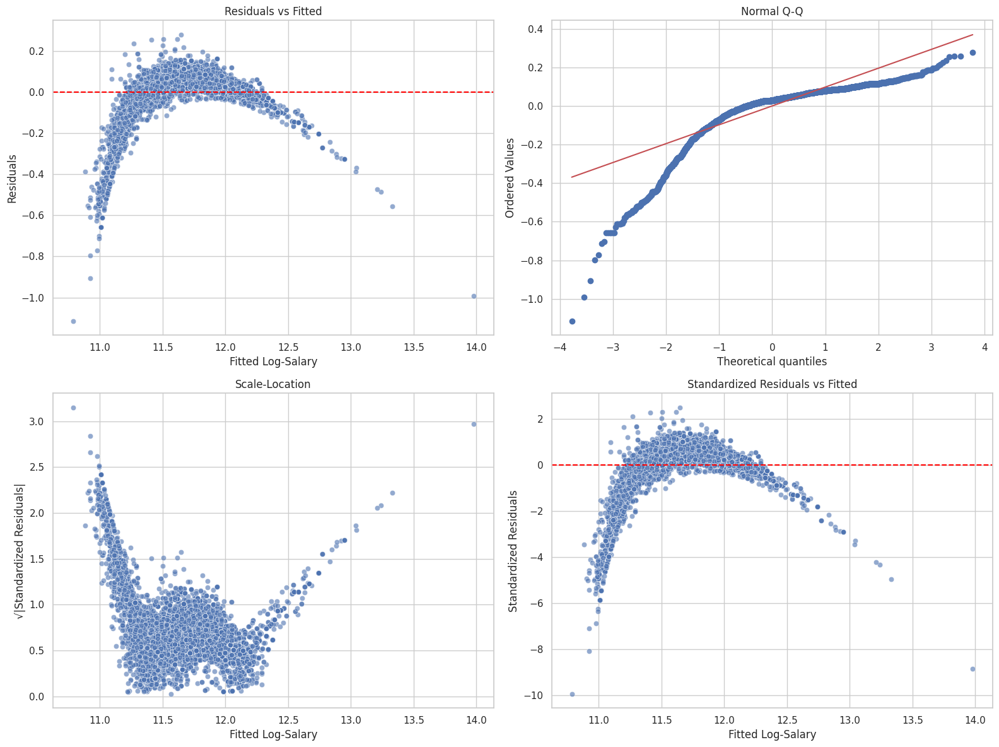

Engineer features from structured columns for salary prediction.
Train Linear Regression model.
Evaluate models using RMSE and R².
Visualize predictions using diagnostic plots.
Push work to GitHub and submit the repository link.
Setup
The instruction below provides you with general keywords for columns used in the lightcast file. See the data schema generated after the load dataset code above to use proper column name. For visualizations, tables, or summaries, please customize colors, fonts, and styles as appropriate to avoid a 2.5-point deduction. Also, provide a two-sentence explanation describing key insights drawn from each section’s code and outputs.
Follow the steps below as necessary, use your best judgement in importing/installing/creating/saving files as needed.
Create a new Jupyter Notebook in your ad688-sp25-lab08 directory named lab08_yourname.ipynb, if the file exists make sure to change the name.
Use your EC2 instance for this lab.
Ensure the lightcast_data.csv file is available on the EC2 instance. if not then Download the dataset
Add the dataset to .gitignore to avoid pushing large files to GitHub. Open your .gitignore file and add:
Make sure to create a virtual environment and install the required Python libraries if needed, don’t forget to activate it:
Install the required Python libraries if needed, you can also use the given requirement file to install the packages to the virtual environment:
from pyspark.sql import SparkSessionimport pandas as pdimport plotly.express as pximport plotly.io as piopio.renderers.default ="notebook"spark = SparkSession.builder.appName("LightcastData").getOrCreate()df = spark.read.option("header", "true").option("inferSchema", "true").option("multiLine","true").option("escape", "\"").csv("./data/lightcast_data.csv")# Show Schema and Sample Data#print("---This is Diagnostic check, No need to print it in the final doc---")#df.printSchema() # comment this line when rendering the submission#df.show(5)
Setting default log level to "WARN".
To adjust logging level use sc.setLogLevel(newLevel). For SparkR, use setLogLevel(newLevel).
25/04/14 12:10:50 WARN NativeCodeLoader: Unable to load native-hadoop library for your platform... using builtin-java classes where applicable
2 Feature Engineering
from pyspark.sql.functions import colfrom pyspark.ml.feature import StringIndexer, OneHotEncoder, VectorAssemblerfrom pyspark.ml import Pipelinefrom pyspark.sql.functions import log1p#Drop rows with nulls in required columnsdf = df.dropna(subset=["SALARY", "SALARY_TO", "SALARY_FROM", "DURATION", "MIN_YEARS_EXPERIENCE", "EMPLOYMENT_TYPE_NAME"])df = df.withColumn("log_salary", log1p(df["SALARY"]))# Define columnscategorical_cols = ["EMPLOYMENT_TYPE_NAME"]numerical_cols = ["SALARY_TO", "SALARY_FROM", "MIN_YEARS_EXPERIENCE"]#Index and encode categoricalsindexers = [ StringIndexer(inputCol=col, outputCol=f"{col}_idx", handleInvalid='skip')for col in categorical_cols]encoders = [ OneHotEncoder(inputCol=f"{col}_idx", outputCol=f"{col}_vec", dropLast=True)for col in categorical_cols]assembler = VectorAssembler( inputCols=numerical_cols + [f"{col}_vec"for col in categorical_cols], outputCol="features")# Build pipelinepipeline = Pipeline(stages=indexers + encoders + [assembler])pipeline_model = pipeline.fit(df)data = pipeline_model.transform(df)data.select("features", "log_salary").show(5, False)
+-------------------------------+------------------+
|features |log_salary |
+-------------------------------+------------------+
|[241000.0,144600.0,6.0,1.0,0.0]|12.169413847867123|
|[188600.0,63200.0,12.0,1.0,0.0]|11.74325116281265 |
|[120328.0,116792.0,5.0,1.0,0.0]|11.68318287504225 |
|[241000.0,144600.0,6.0,1.0,0.0]|12.169413847867123|
|[169800.0,63200.0,12.0,1.0,0.0]|11.665655135642039|
+-------------------------------+------------------+
only showing top 5 rows
3 Train/Test Split
25/04/14 12:11:22 WARN SparkStringUtils: Truncated the string representation of a plan since it was too large. This behavior can be adjusted by setting 'spark.sql.debug.maxToStringFields'.
[Stage 9:> (0 + 1) / 1]
(8716, 135)
(5700, 135)
3.0.0.1 I have used the general split type which is used while the spliting the data 60-40.
4 Linear Regression
from pyspark.ml.regression import LinearRegressionfrom pyspark.ml.evaluation import RegressionEvaluatorimport pandas as pdfeature_names = assembler.getInputCols()lr = LinearRegression(featuresCol="features", labelCol="log_salary", regParam=0.1)lr_model = lr.fit(train_data)predictions = lr_model.transform(test_data)df_pred = predictions.select("prediction", "log_salary").toPandas()evaluator_r2 = RegressionEvaluator(labelCol="log_salary", predictionCol="prediction", metricName="r2")evaluator_rmse = RegressionEvaluator(labelCol="log_salary", predictionCol="prediction", metricName="rmse")evaluator_mae = RegressionEvaluator(labelCol="log_salary", predictionCol="prediction", metricName="mae")r2 = evaluator_r2.evaluate(predictions)rmse = evaluator_rmse.evaluate(predictions)mae = evaluator_mae.evaluate(predictions)print("\n--- Model Performance on Test Data ---")print(f"R²: {r2:.4f}")print(f"RMSE: {rmse:.2f}")print(f"MAE: {mae:.2f}")summary = lr_model.summary
[Stage 17:> (0 + 1) / 1]
--- Model Performance on Test Data ---
R²: 0.9109
RMSE: 0.11
MAE: 0.08
MIN_YEARS_EXPERIENCE: Not significant (p = 0.45), wide confidence interval.
Categorical vars: Both have negative, significant coefficients
5 Diagnostic Plot
Diagnostic plots are essential for evaluating the performance of regression models. In this section, we will create several diagnostic plots to assess the linear regression model’s assumptions and performance. There are four (2*2 grid) main plots we will create, you can use seaborn or matplotlib for this:
Predicted vs Actual Plot
Residuals vs Predicted Plot
Histogram of Residuals
QQ Plot of Residuals

6 Evaluation
[Stage 31:> (0 + 1) / 1]
--- Model Evaluation on log_salary ---
R² : 0.9109
RMSE : 0.1121
6.1 Model Evaluation Plot
Display the predicted vs actual salary plot with a red line indicating the ideal fit (y=x).
Use seaborn or matplotlib to create the plot.
Customize the plot with appropriate titles, labels, and legends.
Describe the plot in a few sentences, highlighting key insights and observations.